Chapter 4 Git
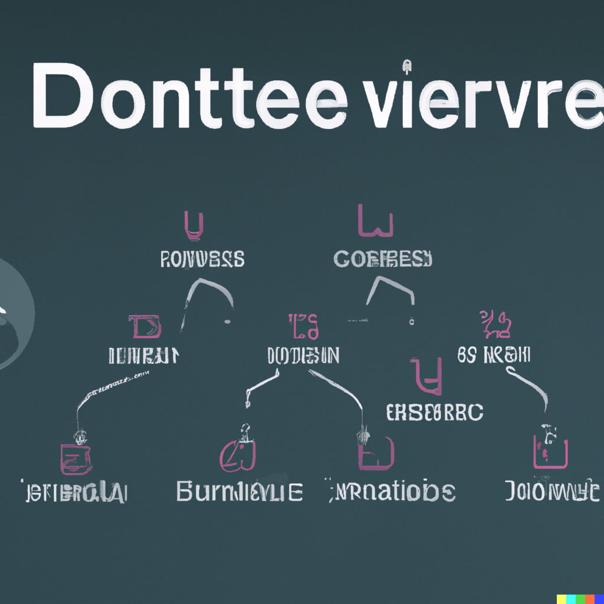
What you’ll have learned by the end of the chapter: basics of working alone, and collaboration, using Git.
4.1 Introduction
Git is a software for version control. Version control is absolutely essential in software
engineering, or when setting up a RAP. If you don’t install a version control system such as Git,
don’t even start trying to set up a RAP. But what does a version control system like Git actually
do? The basic workflow of Git is as follows: you start by setting up a repository for a project. On
your computer, this is nothing more than a folder with your scripts in it. However, if you’re using
Git to keep track of what’s inside that folder, there will be a hidden .git folder with a bunch
of files in it. You can forget about that folder, this is for Git’s own internal needs. What
matters, is that when you make changes to your files, you can first commit these changes, and
then push them back to a repository. Collaborators can copy this repository and synchronize their
files saved on their computers with your changes. Your collaborators can then also work on the
files, then commit and push the changes to the repository as well.
You can then pull back these changes onto your computer, add more code, commit, push, etc… Git makes it easy to collaborate on projects either with other people, or with future you. It is possible to roll back to previous versions of your code base, you can create new branches of your project to test new features (without affecting the main branch of your code), collaborators can submit patches that you can review and merge, and and and…
In my experience, learning git is one of the most difficult things there is for students. And this is because Git solves a complex problem, and there is no easy way to solve a complex problem. But I would however say that Git is not unnescessarily complex. So buckle up, because this chapter is not going to be easy.
Git is incredibly powerful, and absolutely essential in our line of work, it is simply not p ossible to not know at least some basics of Git. And this is what we’re going to do, learn the basics, it’ll keep us plenty busy already.
But for now, let’s pause for a brief moment and watch this video that explains in 2 minutes the general idea of Git.
Let’s get started.
You might have heard of github.com: this is a website that allows programmers to set up repositories on which they can host their code. The way to interact with github.com is via Git; but there are many other website like github.com, such as gitlab.com and bitbucket.com.
For this course, you should create an account on github.com. This should be easy enough. Then you should install Git on your computer.
4.2 Installing Git
Installing Git is not hard; it installs like any piece of software on your computer. If you’re
running a Linux distribution, chances are you already have Git installed. To check if it’s already
installed on a Linux system, open a terminal and type which git. If a path gets returned, like
usr/bin/gin, congratulations, it’s installed, if the command returns nothing you’ll have to
install it. On Ubuntu, type sudo apt-get install git and just wait a bit. If you’re using macOS
or Windows, you will need to install it manually. For Windows, download the installer from
here, and for macOS from here;
you’ll see that there are several ways of installing it on macOS, if you’ve never heard of homebrew
or macports then install the binary package from
https://sourceforge.net/projects/git-osx-installer/.
4.3 Setting up a repo
Ok so now that Git is installed, we can actually start using it. First, let’s start by creating a new repository on github.com. As I’ve mentioned in the introductory paragraph, Git will allow you to interact with github.com, and you’ll see in what ways soon enough. For now, login to your github.com account, and create a new repository by clicking on the ‘plus’ sign in the top right corner of your profile page and then choose ‘New repository’:

In the next screen, choose a nice name for your repository and ignore the other options, they’re not important for now. Then click on ‘Create repository’:

Ok, we’re almost done with the easy part. The next screen tells us we can start interacting with the repository. For this, we’re first going to click on ‘README’:

This will add a README file that we can also edit from github.com directly:

Add some lines to the file, and then click on ‘Commit new file’. You’ll end up on the main page of your freshly created repository. We are now done with setting up the repository on github.com. We can now clone the repository onto our machines. For this, click on ‘Code’, then ‘SSH’ and then on the copy icon:

Now, to make things easier on you, we’re going to use Rstudio as an interface for Git. But you should know that Git can be used independently from a terminal application on Linux or macOS, or from Git Bash on Windows, and you should definitely get familiar with the Linux/macOS command line at some point if you wish to become a data scientist. This is because most servers, if not all, that you are going to interact with in your career are running some flavour of Linux. But since the Linux command line is outside the scope of this course, we’ll use Rstudio instead (well, we’ll use it as much as we can, because at some point it won’t be enough and have to use the terminal instead anyways…).
4.4 Cloning the repository onto your computer
Start Rstudio and click on ‘new project’ and then ‘Version Control’:

Then choose ‘Git’:

Then paste the link from before into the ‘Repository URL’ field, the ‘project directory name’ will fill out automatically, choose where to save the repository in your computer, click on ‘Open in new session’ and then on ‘Create Project’:

A new Rstudio window should open. There are several things that you should pay attention to now:

Icon (1) indicates that this project is git-enabled so to speak. (2) shows you that Rstudio is open
inside the example_repo (or whatever you named your repo to) project, and (3) shows you the actual
repository that was downloaded from github.com at the path you chose before. You will also see the
README file that we created before.
4.5 Your first commit
Let’s now create a simple script and add some lines of code to it, and save it. Check out the Git
tab now, you should see your script there, alongside a ? icon:
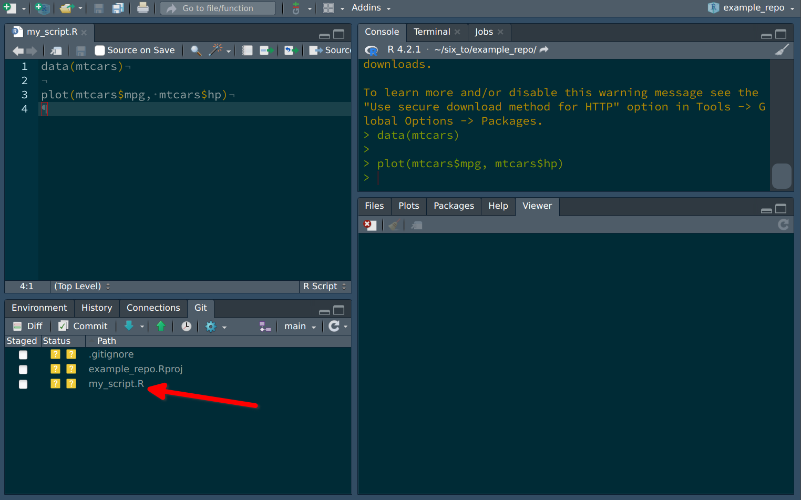
We are now ready to commit the file, but first let’s check out what actually changed. If you click
on Diff, a new window will open with the different files that changed since last time:
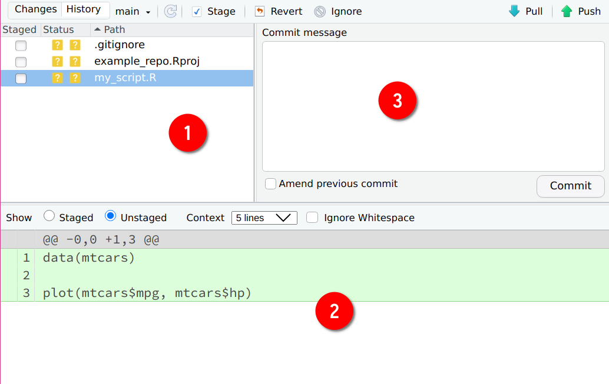
Icon (1) shows you the list of files that changed. We only created the file called my_script.R, but two
other files are listed as well. These files are automatically generated when starting a new project.
.gitignore lists files and folders that Git should not track, meaning, any change that will affect
these files will be ignored by Git. This means that these files will also not be uploaded to
github.com when committing. The file ending with the .Rproj extension is a RStudio specific file,
which simply defines some variables that help RStudio start your project. What matters here is
that the files you changed are listed, and that you saved them. You can double check that you actually
correctly saved your files by looking at (2), which lists the lines that were added (added lines
will be highlighted in green, deleted lines in red). In (3) you can write a commit message. This
message should be informative enough that a coworker, or future you, can read through them and have
a rough idea of what changed. Best practice is to commit often and early, and try to have one commit
per change (per file for example, or per function within that file) that you make.
Let’s write something like: “Started project: first graph done” as the commit message. We’re almost done: now
let’s stage the files for this commit. This means that we can choose which files should actually
be included in this commit. You can only stage one file, several files, or all files. Since this is
our first commit, let’s stage everything we’ve got, by simply clicking on the checkboxes below the
column Staged in (1).
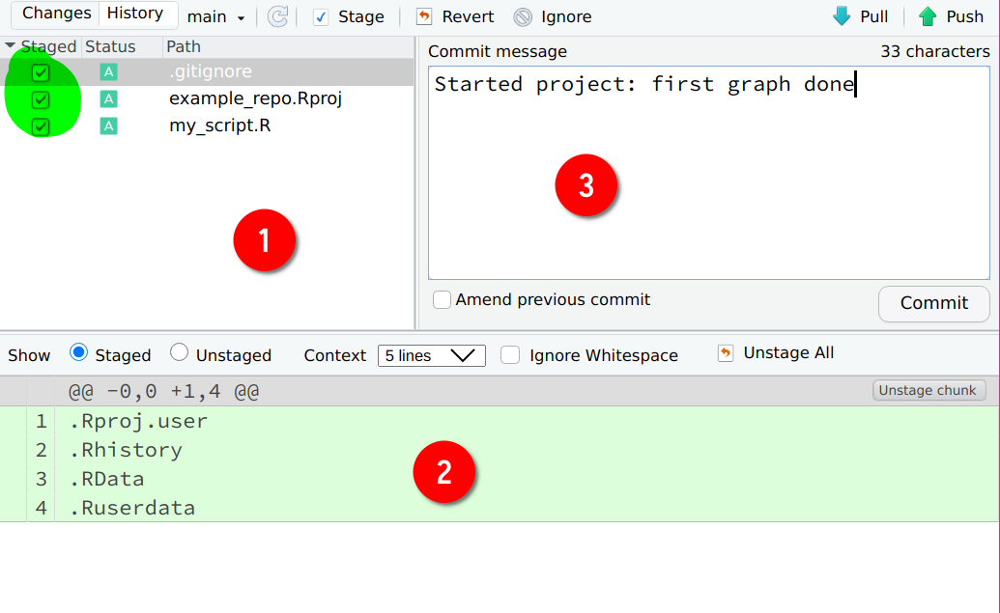
The status of the files now changed: they’ve been added for this commit. We can now click on the
Commit button. Now these changes have been committed there are no unstaged files anymore. We have
two options at this point: we can continue working, and then do another commit, or we can push
our changes to github.com. Committing without pushing does not make our changes available to our
colleagues, but because we committed them, we can recover our changes. For example, if I continue
working on my file and remove some lines by mistake, I can recover them (I’ll show you how to do
this later on). But it is a much better idea to push our commit now. This makes our changes
available to colleagues (who need to pull the changes from github.com) and should our computer
spontaneously combust, at least or work is now securely saved on github.com. So let’s Push:

Ooooooops! Something’s wrong! Apparently, we do not have access rights to the repo? This can sound weird, because after all, we created the repo with our account and then cloned it. So what’s going on? Well, remember that anyone can clone a public repository, but only authorized people can push changes to it. So at this stage, the Git software (that we’re using through RStudio) has no clue who you are. Git simply doesn’t know that your the admin of the repository. You need to provide a way for Git to know by logging in. And the way you login is through a so-called ssh key.
Now if you thought that Git was confusing, I’m sorry to say that what’s coming confuses students
in general even more. Ok so what’s a ssh key, and why does Git need it? An ssh key is actually
a misnomer, because we should really be talking about a pair of keys. The idea is that you
generated two files on the computer that you need to access github.com from. One of these keys
will be a public key, the other a private key. The private key will be a file usually called
id_rsa without any extension, while the public key will be called the same, but with a .pub
extension, so id_rsa.pub (we will generate these two files using RStudio in a bit).
What you do is that you give the public key to github.com, but you keep your private key on
your machine. Never, ever, upload or share your private key with anyone! It’s called private for
a reason. Once github.com has your public key, each time you want to push to github.com,
what happens is that the public key is checked against your private key. If they match, github.com
knows that you are the person you claim to be, and will allow you to push to the repository. If not
you will get the error from before.
So let’s now generate an ssh key pair. For this, go to Tools > Global Options > Git/Svn, and then
click on the Create RSA Key...
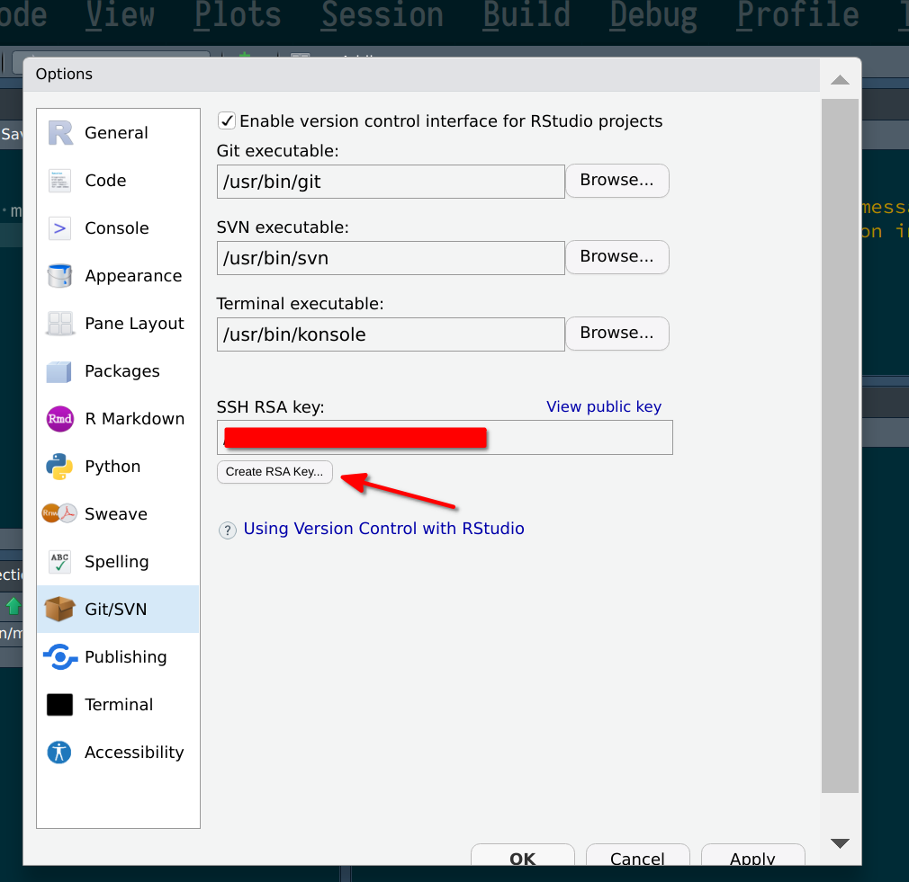
Icon (1) shows you the path where the keys will be saved. This is only useful if
you have reasons to worry that your private key might be compromised, but without physical access
to your machine, an attacker would have a lot of trouble retrieving it (if you keep your OS updated…).
Finally click on Create:
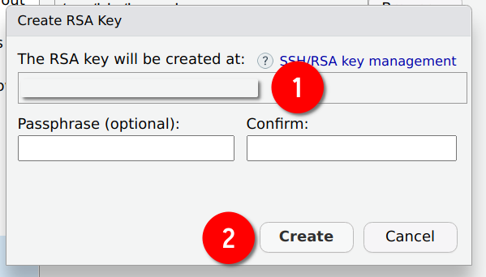
Ok so now that you have generated these keys, let’s copy the public key in
our clipboard (because we need to paste the key into github.com). You should be able to find this
key from RStudio. Go back to Tools > Global Options > Git/Svn, and then click on View public key:

A new window will open showing you your public key. You can now copy and paste it into github.com.
For this, first go to your profile, then Settings then SSH and GPG keys:
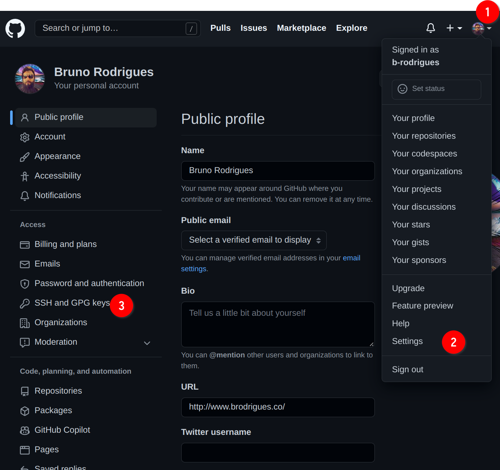
Then, on the new screen click on New SSH key:
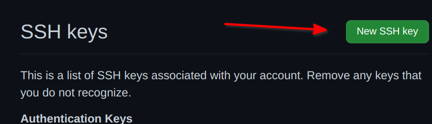
You can now add your key. Add a title, for example home for your home
computer, or work for your work laptop. Paste the key from RStudio
into the field (2), and then click on Add SSH key:
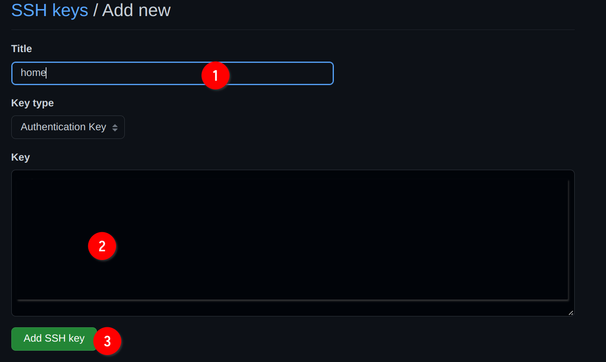
Ok, now that github.com has your public key, you can now push your commits
without any error. Go back to RStudio, to the Git tab and click on
Push:

A new window will open, this time showing you that the upload went through:
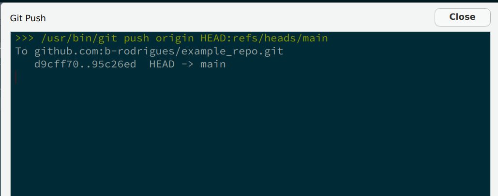
You will need to add one public key per computer you use on github.com. In the past, it was possible to push your commits by providing a password each time. This was not secure enough however, so now the only way to to push commits is via ssh key pairs. This concept is quite important: whatever service you use, even if your company has a private Git server instance, you will need to provide the public key to the central server. All of this ssh key pair business IS NOT specific to github.com, so make sure that you understand this well, because sooner rather later, you will need to provide another public key, either because you work from several computers or because the your first job will have it’s own Git instance.
Ok so now you have an account on github.com, and know how to set up a
repo and push code to it. This is already quite useful, because it allows
you and future you to collaborate. What I mean by this is that if in two
or three months you need to go back to some previous version of your
code this is now possible. Let’s try it out; change the file by adding
some lines to it, commit your changes and push again. Remember to use
a commit message that explain what you did. Once you’re done, go back
to the Git tab of Rstudio, and click on the History button (the
icon is a clock):
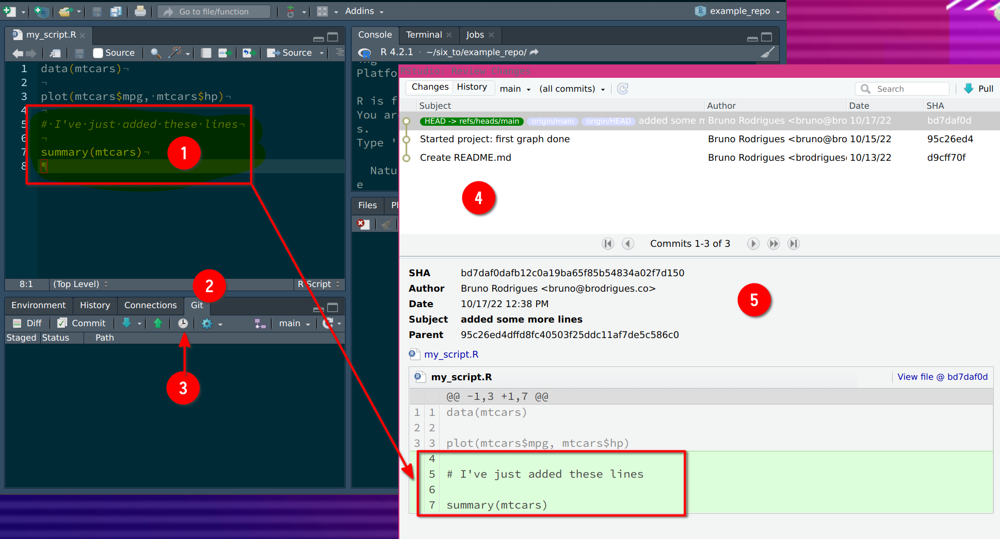
As you can see from the picture above, clicking on History shows every commit since the beginning
of the repo. It also shows you who pushed that particular commit, and when. For now, you will only
see your name. At (1) you see the lines I’ve added. These are reflected, in green, in the History
window. If I had removed some lines, these would have been highlighted in red in the same window.
(4) shows you the only commit history. There’s not much for now, but for projects that have been
ongoing for some time, this can get quite long! Finally, (5) shows many interesting details. As
before, who pushed the commit, when, the commit message (under Subject), and finally the
SHA. This is a unique sequence of characters that identifies the commit. If you select another
commit, you will notice that its SHA is different:

The SHA identifier (called a hash) is what we’re going to use to revert to a previous state of
the code base. But because this is a bit advanced, there is no way of doing it from RStudio. You
will need to open a terminal and use Git from there. On Windows, go to the folder of your project,
right-click on some white space and select Git Bash Here:

A similar approach can be used for most Linux distributions (but simply open
a terminal, Git Bash is Windows only), and you can apparently do something
similar on macOS, but first need to active the required service
as explained here.
You can also simply open a terminal and navigate to the right folder using
cd.1
Once the terminal is opened, follow along but by adapting the paths to your computer:
# The first line changes the working directory to my github repo on my computer
# If you did not open the terminal inside the folder as explained above, you need
# adapt the path.
cd ~/six_to/example_repo # example_repo is the folder where I cloned the repo
ls # List all the files in the directory## example_repo.Rproj
## my_script.R
## new_script.R
## README.mdListing the files inside the folder confirms that I’m in the right spot. Something
else you could do here is try out some git commands, for example, git log:
git log## commit bd7daf0dafb12c0a19ba65f85b54834a02f7d150
## Author: Bruno Rodrigues <bruno@brodrigues.co>
## Date: Mon Oct 17 14:38:59 2022 +0200
##
## added some more lines
##
## commit 95c26ed4dffd8fc40503f25ddc11af7de5c586c0
## Author: Bruno Rodrigues <bruno@brodrigues.co>
## Date: Sat Oct 15 12:52:43 2022 +0200
##
## Started project: first graph done
##
## commit d9cff70ff71241ed8514cb65d97e669b0bbdf0f6
## Author: Bruno Rodrigues <brodriguesco@protonmail.com>
## Date: Thu Oct 13 22:12:06 2022 +0200
##
## Create README.md
git log returns the same stuff as the History button of the Git pane inside
RStudio. You see the commit hash, the name of the author and when the commit was
pushed. At this stage, we have two options. We could “go back in time”, but just look
around, and then go back to where the repository stands currently. Or we could essentially go back in time, and
stay there, meaning, we actually revert the code base back. Let’s try the first
option, let’s just take a look around at the code base at a particular point in time.
Copy the hash of a previous commit. With the hash in your clipboard, use the git checkout
command to go back to this commit:
git checkout 95c26ed4dffd8fYou will see an output similar to this:
Note: switching to '95c26ed4dffd8f'.
You are in 'detached HEAD' state. You can look around, make experimental
changes and commit them, and you can discard any commits you make in this
state without impacting any branches by switching back to a branch.
If you want to create a new branch to retain commits you create, you may
do so (now or later) by using -c with the switch command. Example:
git switch -c <new-branch-name>
Or undo this operation with:
git switch -
Turn off this advice by setting config variable advice.detachedHead to false
HEAD is now at 95c26ed Started project: first graph done
When checking out a commit, you are in detached HEAD state. I won’t go into specifics, but what this means is that anything you do here, won’t get saved, unless you specifically create a new branch for it. A Git repository is composed of branches. The branche you’re currently working on should be called main or master. You can create new branches, and continue working on these other branches, without affecting the master branch. This allows to explore new ideas and experiment. If this turns out to be fruitful, you can merge the experimental branch back into master. We are not going to explore branches in this course, so you’ll have to read about it on your own. But don’t worry, branches are not that difficult to grok.
Take a look at the script file now, you will see that the lines you added are now missing (the
following line only works on Linux, macOS, or inside a Git Bash terminal on Windows. cat is a
command line program that prints the contents of a text file to a terminal):
cat my_script.ROnce you’re done taking your tour, go back to the main (or master) branch by running:
git checkout mainOk, so how do we actually go back to a previous state? For this, use git revert.
But unlike git checkout, you don’t use the hash of the commit you want to go back to.
Instead, you need to use the hash of the commit you want to “cancel”. For example,
imagine that my commit history looks like this:
## commit bd7daf0dafb12c0a19ba65f85b54834a02f7d150
## Author: Bruno Rodrigues <bruno@brodrigues.co>
## Date: Mon Oct 17 14:38:59 2022 +0200
##
## added some more lines
##
## commit 95c26ed4dffd8fc40503f25ddc11af7de5c586c0
## Author: Bruno Rodrigues <bruno@brodrigues.co>
## Date: Sat Oct 15 12:52:43 2022 +0200
##
## Started project: first graph done
##
## commit d9cff70ff71241ed8514cb65d97e669b0bbdf0f6
## Author: Bruno Rodrigues <brodriguesco@protonmail.com>
## Date: Thu Oct 13 22:12:06 2022 +0200
##
## Create README.md
and let’s suppose I want to go back to commit 95c26ed4dffd8fc
(so my second commit). What I need to do is essentially cancel
commit bd7daf0dafb1, which comes after commit 95c26ed4dffd8fc
(look at the dates: commit 95c26ed4dffd8fc was made on October 15th
and commit bd7daf0dafb1 was made on October 17th).
So I need to revert commit bd7daf0dafb1. And that’s what we’re going
to do:
git revert bd7daf0dafb1This opens a text editor inside your terminal. Here you can add a commit
message or just keep the one that was added by default. Let’s just keep
it and quit the text editor. Unfortunately, this is not very use friendly,
but to quit the editor type :q.
(The editor that was opened is vim, a very powerful terminal editor, but
with a very steep learning curve.)
Now you’re back inside your terminal. Type git log and you will see a new
commit (that you have yet to push), which essentially cancels the commit
bd7daf0dafb1. You can now push this; for pushing this one, let’s stay
inside the terminal and use the following command:
git push origin mainorigin main: origin here refers to the remote repository, so to github.com,
and main to the main branch.
Ok, we’re doing with the basics. Let’s now see how we can contribute to some repository.
4.6 Collaborating
Github (and similar services) allow you to collaborate with people. There are two ways of achieving this. You can invite people to work with you on the same project, by giving them writing rights to the repository. This is what we are going to cover in this section. The other way to collaborate is to let strangers fork your repository (make a copy of it on github.com); they can then work on their copy of the project independently from you. If they want to submit patches to you, they can do so by doing a so-called pull request. This workflow is quite different from what we’ll see here and will be discussed in the next section.
So for this section you will need to form teams of at least 2 people. One of you will invite the other to collaborate by going on github.com and then following the instructions in the picture below:

Type the username of your colleague to find him/her. In my case I’m inviting my good friend David Solito:

David now essentially owns the repository as well! So he can contribute to it, just like me. Now, let’s suppose that I continue working on my end, and don’t coordinate with David. After all, this is a post-covid world, so David might be working asynchronously from home, and maybe he lives in an entire different time zone completely! What’s important to realize, is that unlike other ways of collaborating online (for example with an office suite), you do not need to coordinate to collaborate with Git.
The file should look like this (yours might be different, it doesn’t matter):
data(mtcars)
plot(mtcars$mpg, mtcars$hp)I’m going to change it to this:
library(ggplot2)
data(mtcars)
ggplot(data = mtcars) +
geom_point(aes(y = hp, x = mpg))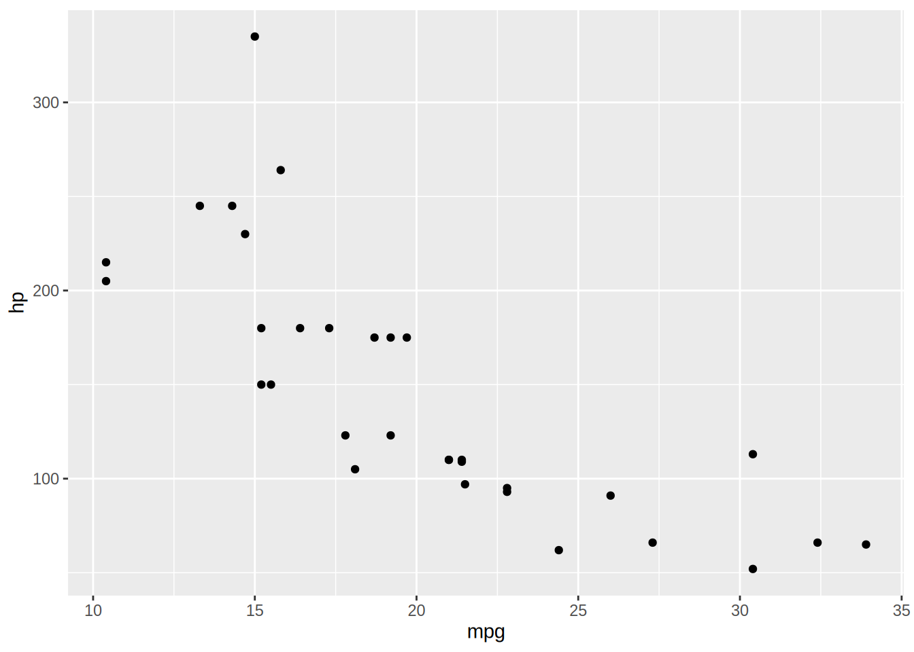
The only thing I did was change from the base plotting functions to {ggplot2}.
Since you guys formed groups, please work independently on the repository. Go crazy, change
some lines, add lines, remove lines, or add new files with new things. Just work as normal,
and commit and push your changes and see what happens.
So let’s commit and push. You can do it from RStudio or from the command line/Git Bash. This is what I’ll be doing from now on, but feel free to continue using Git through RStudio:
git add . # This adds every file I've changed to this next commit
git commit -am "Remade plot with ggplot2" # git commit is the command to create the commit. The -am flag means: 'a' stands for all, as in 'adding all files to the commit', so it's actually redundant with the previous line, but I use it out of habit, and 'm' specifies that we want to add a message
git push origin main # This pushes the commit to the repository on github.comAnd this is what happens:
➤ git push origin main
To github.com:b-rodrigues/example_repo.git
! [rejected] main -> main (fetch first)
error: failed to push some refs to 'github.com:b-rodrigues/example_repo.git'
hint: Updates were rejected because the remote contains work that you do
hint: not have locally. This is usually caused by another repository pushing
hint: to the same ref. You may want to first integrate the remote changes
hint: (e.g., 'git pull ...') before pushing again.
hint: See the 'Note about fast-forwards' in 'git push --help' for details.What this all means is that David already pushed some changes while I was working on the project as well. It says so very cleary Updates were rejected because the remote contains work that you do not have locally. Git tells us that we first need to pull (download, if you will) the changes to our own computer to integrate the changes, and then we can push again.
At this point, if we want, we can first go to github.com and see the commit history there to see what David did. Go to your repo, and click on the commit history icon:

Doing so will list the commit history, as currently on github.com:
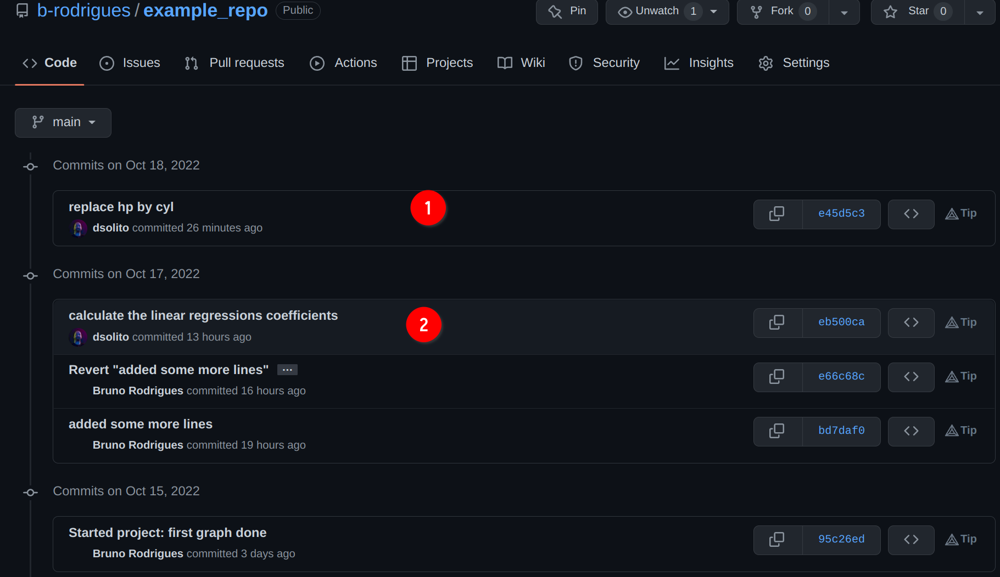
While I was working, David pushed 2 commits to the repository. If you compare to your local history,
using git log you will see that these commits are not there, but instead, however many
commits you did (this will not be the case for all of you; whoever of you pushed first will not
see any difference between the local and remote repository). Let’s see how it looks for me:
git logcommit d2ab909fc679a5661fc3c49c7ac549a2764c539e (HEAD -> main)
Author: Bruno Rodrigues <bruno@brodrigues.co>
Date: Tue Oct 18 09:28:10 2022 +0200
Remade plot with ggplot2
commit e66c68cc8b58831004d1c9433b2223503d718e1c (origin/main, origin/HEAD)
Author: Bruno Rodrigues <bruno@brodrigues.co>
Date: Mon Oct 17 17:33:33 2022 +0200
Revert "added some more lines"
This reverts commit bd7daf0dafb12c0a19ba65f85b54834a02f7d150.
commit bd7daf0dafb12c0a19ba65f85b54834a02f7d150
Author: Bruno Rodrigues <bruno@brodrigues.co>
Date: Mon Oct 17 14:38:59 2022 +0200
added some more lines
commit 95c26ed4dffd8fc40503f25ddc11af7de5c586c0
Author: Bruno Rodrigues <bruno@brodrigues.co>
Date: Sat Oct 15 12:52:43 2022 +0200
Started project: first graph done
commit d9cff70ff71241ed8514cb65d97e669b0bbdf0f6
Author: Bruno Rodrigues <brodriguesco@protonmail.com>
Date: Thu Oct 13 22:12:06 2022 +0200
Create README.md
Yep, so none of David’s commits in sight. Let me do what Git told me to do: let’s pull, or download, David’s commits locally:
git pull --rebase --rebase is a flag that keeps the commit history linear. There are many different ways
you can pull changes, but for our purposes we can focus on --rebase. The other strategies
are more advanced, and you might want at some point to take a look at them.
Once git pull --rebase is done, we get the following message:
Auto-merging my_script.R
CONFLICT (content): Merge conflict in my_script.R
error: could not apply d2ab909... Remade plot with ggplot2
hint: Resolve all conflicts manually, mark them as resolved with
hint: "git add/rm <conflicted_files>", then run "git rebase --continue".
hint: You can instead skip this commit: run "git rebase --skip".
hint: To abort and get back to the state before "git rebase", run "git rebase --abort".
Could not apply d2ab909... Remade plot with ggplot2
Once again, it is important to read what Git is telling us. There is a merge conflict
in the my_script.R file. Let’s open it, and see what’s going on:

We can see two things: the lines that David changed in (1), and the lines I’ve added
in (2). This happened because we changed the same lines. Had I added lines instead of
changing lines that were already there, the merge would have happened automatically,
because there would not have been any conflict. In this case however, Git does not know
how to solve the issue: do we keep David’s changes, or mine? Actually, we need to keep both.
I’ll keep my version of plot that uses {ggplot2}, but will also keep what David added:
he replaced the hp variable by cyl, and added a linear regression as well. Since this
seems sensible to me, I will adapt the script in a way that gracefully merges both
contributions. So the file looks like this now:
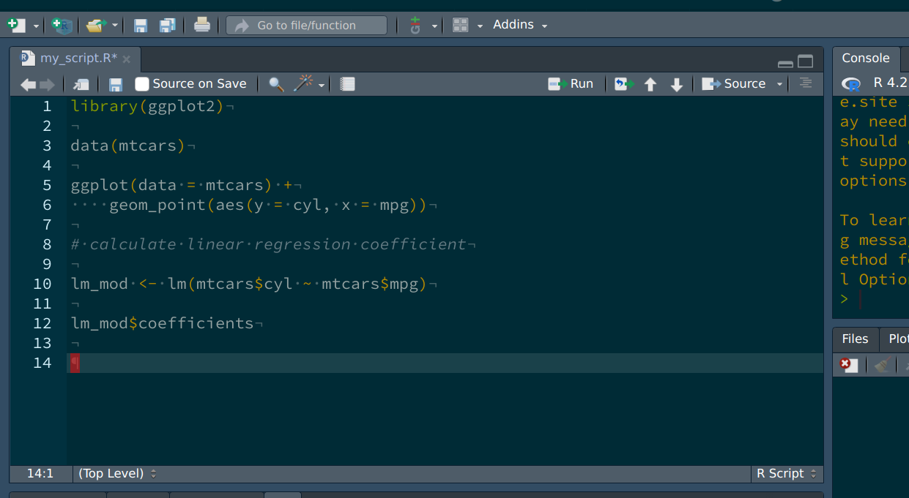
We can now save, and continue following the hints from Git, namely, adding the changed
file to the next commit and then use git rebase --continue:
git add my_script.R
git rebase --continueThis will once again open the editor in your terminal. Simply close it with :q. Let’s now push:
git push origin mainand we’re done! Let’s go back to github.com to see the commit history. You can click on the hash to see the details of how the file changed (you can do so from RStudio as well):

In green, you see lines that were added, and in red, lines that were removed. The lines where the linear model was defined are not impacted, because David wrote them at the bottom of the script, and I did not write anything there:
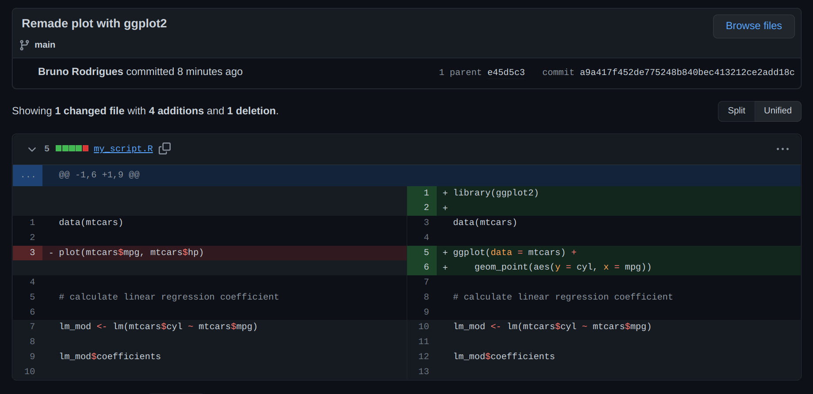
4.7 Branches
It is possible to create new branches and continue working on these branches without impacting
the code in the main branch. This is useful if you want to experiment and explore new ideas.
The main or master branch can thus be used only to have code that is ready to get shipped
and distributed, while you can keep working on a development branch. Let’s create a branch called
dev by using the git checkout command, and let’s also add the -b flag to immediately switch
to it:
➤ git checkout -b dev
Switched to a new branch 'dev'It is possible to list the existing branches using git branch:
➤ git branch
* dev
mainAs a little aside, if you’re working inside a terminal instead of RStudio or another GUI application, it might be a good idea to configure your terminal a little bit to do two things:
- change the branch you’re currently on
- show if some files got changed.
If you want to keep it simple, following this tutorial
should be enough. If you want something more fancy,
use this other tutorial.
I have not followed either, so I don’t know if they work, but by the looks of it they should, and it should work on both Linux
and macOS I believe. If these don’t work, just google for “showing git branch in terminal”. This is entirely optional, and
you can use git branch to check which branch you’re currently working on.
Ok so now that we are on the dev branch, let’s change the files a little bit. Change some lines, then commit, then add some
new files and commit again. Then push to dev using:
➤ git push origin devThis is what you should see on github.com after all is done:
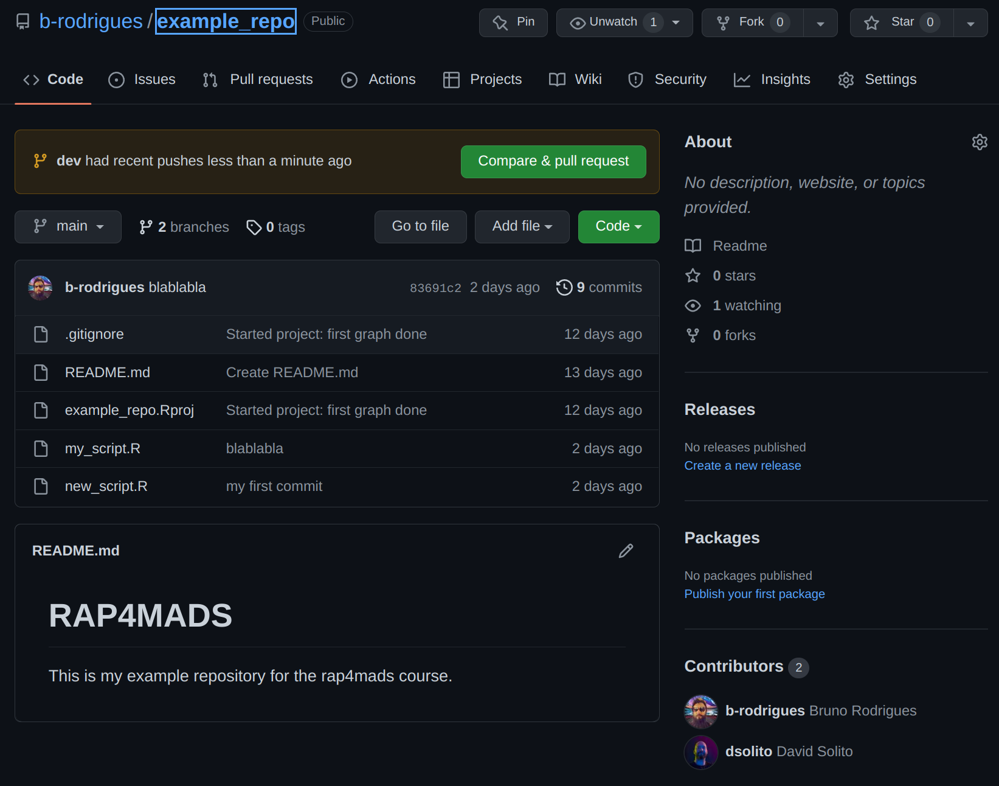
The video below shows you how you can switch between branches and check the commit history of both:
Let’s suppose that we are happy with our experiments on the dev branch, and are
ready to add them to the master or main branch. For this, checkout the main branch:
➤ git checkout mainYou can now pull from dev. This will update your local main branch with the changes from dev.
Depending on what changes you introduced, you might need to solve some conflicts. Try to use the rebase
strategy, and then solve the conflict. In my case, the merge didn’t cause an issue:
➤ git pull origin dev
From github.com:b-rodrigues/example_repo
* branch dev -> FETCH_HEAD
Updating a9a417f..8b2f04f
Fast-forward
my_script.R | 8 +++-----
new_script.R | 1 +
2 files changed, 4 insertions(+), 5 deletions(-)
create mode 100644 new_script.RNow if you run git status, this is what you’ll see:
➤ git status
On branch main
Your branch and 'origin/main' have diverged,
and have 2 and 2 different commits each, respectively.
(use "git pull" to merge the remote branch into yours)Now, remember that I’ve pulled from dev into main. But git status complains that the remote
main and local main branches have diverged. In these situations, git suggests to pull. This time
we’re pulling from main:
➤ git pullThis will likely result in the following message:
hint: You have divergent branches and need to specify how to reconcile them.
hint: You can do so by running one of the following commands sometime before
hint: your next pull:
hint:
hint: git config pull.rebase false # merge
hint: git config pull.rebase true # rebase
hint: git config pull.ff only # fast-forward only
hint:
hint: You can replace "git config" with "git config --global" to set a default
hint: preference for all repositories. You can also pass --rebase, --no-rebase,
hint: or --ff-only on the command line to override the configured default per
hint: invocation.
fatal: Need to specify how to reconcile divergent branches.Because there are conflicts, I need to specify how the pulling should be done. For this,
I’m using once again the rebase flag:
➤ git pull --rebase
Auto-merging my_script.R
CONFLICT (content): Merge conflict in my_script.R
error: could not apply b240566... lm -> rf
hint: Resolve all conflicts manually, mark them as resolved with
hint: "git add/rm <conflicted_files>", then run "git rebase --continue".
hint: You can instead skip this commit: run "git rebase --skip".
hint: To abort and get back to the state before "git rebase", run "git rebase --abort".
Could not apply b240566... lm -> rfSo now I have conflicts. This is how the my_script.R file looks like:
library(ggplot2)
library(randomForest)
data(mtcars)
ggplot(data = mtcars) +
geom_point(aes(y = cyl, x = mpg))
rf <- randomForest(hp ~ mpg, data = mtcars)
<<<<<<< HEAD
data(iris)
head(iris)
=======
plot(rf)
>>>>>>> b240566 (lm -> rf)I need to solve the conflicts, and will do so by keeping the following lines:
library(ggplot2)
library(randomForest)
data(mtcars)
ggplot(data = mtcars) +
geom_point(aes(y = cyl, x = mpg))
rf <- randomForest(hp ~ mpg, data = mtcars)
plot(rf)Let’s save the script, and call git rebase --continue. You might see something like this:
➤ git rebase --continue
[detached HEAD 929f4ab] lm -> rf
1 file changed, 4 insertions(+), 9 deletions(-)
Auto-merging new_script.R
CONFLICT (add/add): Merge conflict in new_script.R
error: could not apply 8b2f04f... new fileThere’s another conflict: this time, this is because of the commit 8b2f04f, where I added a new file.
This one is easy to solve: I simply want to keep this file, so I simply keep track of it with
git add new_script.R and then, once again, call git rebase --continue:
➤ git rebase --continue
[detached HEAD 20c04f8] new file
1 file changed, 4 insertions(+)
Successfully rebased and updated refs/heads/main.I’m now done and can push to main:
➤ git push origin main
Enumerating objects: 9, done.
Counting objects: 100% (9/9), done.
Delta compression using up to 12 threads
Compressing objects: 100% (6/6), done.
Writing objects: 100% (6/6), 660 bytes | 660.00 KiB/s, done.
Total 6 (delta 2), reused 0 (delta 0), pack-reused 0
remote: Resolving deltas: 100% (2/2), completed with 1 local object.
To github.com:b-rodrigues/example_repo.git
83691c2..20c04f8 main -> mainThere are other ways to achieve this. So let’s go back to dev and continue working:
➤ git checkout devAdd some lines to my_script.R and then commit and push:
➤ git add .
➤ git commit -am "more models"
[dev a0fa9fa] more models
1 file changed, 4 insertions(+)
➤ git push origin dev
Enumerating objects: 5, done.
Counting objects: 100% (5/5), done.
Delta compression using up to 12 threads
Compressing objects: 100% (3/3), done.
Writing objects: 100% (3/3), 329 bytes | 329.00 KiB/s, done.
Total 3 (delta 2), reused 0 (delta 0), pack-reused 0
remote: Resolving deltas: 100% (2/2), completed with 2 local objects.
To github.com:b-rodrigues/example_repo.git
8b2f04f..a0fa9fa dev -> devLet’s suppose we’re done with adding features to dev. Let’s checkout main:
➤ git checkout mainand now, let’s not pull from dev, but merge:
➤ git merge dev
Auto-merging my_script.R
CONFLICT (content): Merge conflict in my_script.R
Auto-merging new_script.R
CONFLICT (add/add): Merge conflict in new_script.R
Automatic merge failed; fix conflicts and then commit the result.Some conflicts are in the file. Let’s take a look (because I’m in the terminal, I use cat to
print the file to the terminal, but you can open it in RStudio):
➤ cat my_script.R
library(ggplot2)
library(randomForest)
data(mtcars)
ggplot(data = mtcars) +
geom_point(aes(y = cyl, x = mpg))
rf <- randomForest(hp ~ mpg, data = mtcars)
<<<<<<< HEAD
plot(rf)
=======
plot(rf)
rf2 <- randomForest(hp ~ mpg + am + cyl, data = mtcars)
plot(rf2)
>>>>>>> devLooks like I somehow added some newline somewhere and this caused the conflict. This is quite easy to solve, let’s make the script look like this:
library(ggplot2)
library(randomForest)
data(mtcars)
ggplot(data = mtcars) +
geom_point(aes(y = cyl, x = mpg))
rf <- randomForest(hp ~ mpg, data = mtcars)
plot(rf)
rf2 <- randomForest(hp ~ mpg + am + cyl, data = mtcars)
plot(rf2)We can now simply commit and push. Merging can be simpler than pulling and rebasing, especially if
you exclusively worked on dev and master has not seen any activity.
4.8 Contributing to someone else’s repository
It is also possible to contribute to someone else’s repository; by this I mean someone who is not a colleague, and who did not invite you to his or her repository. So this means that you do not have writing rights to the repository and cannot push to it.
This is outside the scope of this course, but it is crucial that you understand this as well. For this reason, I highly recommend reading this link.
Ok, so this wraps up this chapter. Git is incredibly feature rich and complex, but as already discussed, it is NOT optional to know about Git in our trade. So now that you have some understanding of how it works, I suggest that you read the manual here.
W3Schools has a great tutorial as well.
Remember the introduction to this book, where I discussed everything else that you should know…↩︎